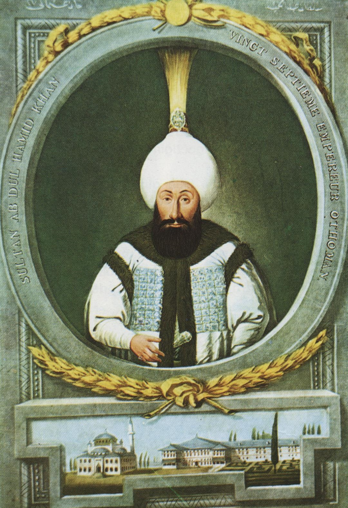

| önceki |  |
sonraki |
I. Abdülhamid, Osmanlı İmparatorluğu'nun yirmi yedinci padişahı ve 92. İslam halifesidir. Babası III. Ahmed, annesi Şermi Râbia Sultan'dır. Kırk üç yıllık uzun kafes hapsinin ardından tahta geçmiş; saltanatı Kırım'ın kaybıyla neticelenen feci Küçük Kaynarca Antlaşması'nın getirdiği ağır travmalar ve savaşlarla geçmiştir. Dindarlığı, merhameti, ıslahatçı gayretleri ve Özi Kalesi'ndeki Müslüman katliamının acısına dayanamayarak felç geçirmesiyle tarihe mal olmuş hüzünlü bir hükümdardır.
Kırk Üç Yıllık Sabır ve Tahta Çıkışı
20 Mart 1725 tarihinde İstanbul'da doğdu. Hayatının 43 yılını sarayda Şimşirlik dairesinde hat sanatıyla ve dini ilimlerle meşgul olarak geçirdi. Ağabeyi III. Mustafa'nın vefatı üzerine 21 Ocak 1774'te 49 yaşında tahta oturdu. Cülusunda devam etmekte olan Rus harbi sebebiyle hazinede para bulunmadığından, tarihte ilk defa cülus bahşişi dağıtılamadı.
Küçük Kaynarca Antlaşması (1774) ve Kırım'ın Kaybı
Tahta geçtiğinde Osmanlı orduları Şumnu önlerinde kuşatılmıştı. 21 Temmuz 1774'te imzalanan Küçük Kaynarca Antlaşması Osmanlı tarihinin en ağır şartlı belgelerinden biri oldu:
- Kırım'ın Bağımsızlığı: Üç asırdır Osmanlı'ya bağlı olan Müslüman-Türk Kırım Hanlığı bağımsız oldu. Böylece Osmanlı Devleti, tarihinde ilk defa nüfusunun tamamı Müslüman ve Türk olan bir vatan toprağını kaybetti.
- Hilafetin Uluslararası Kullanımı: Antlaşmada yer alan "Kırım Müslümanları dini bakımdan hilafet makamına bağlı kalacaktır" maddesiyle Osmanlı padişahlarının "Halife" sıfatı ilk defa uluslararası bir antlaşma metninde resmiyet kazandı.
- Karadeniz ve Boğazlar: Karadeniz bir "Türk Gölü" olmaktan çıktı; Rus ticaret gemilerine Karadeniz ve Boğazlar'da serbest geçiş hakkı tanındı. Rusya'ya fahiş savaş tazminatı ödendi.
- 1783 yılında Rus Çariçesi II. Katerina Kırım'ı resmen ilhak ederek yüz binlerce Kırım Tatarını sürgün ve katliama uğrattı.
Sadrazam Halil Hamid Paşa ve Cezayirli Gazi Hasan Paşa Islahatları
I. Abdülhamid, devleti ayağa kaldırmak amacıyla dirayetli Sadrazam Halil Hamid Paşa ve evcil aslanıyla dolaşmasıyla meşhur efsanevi Kaptan-ı Derya Cezayirli Gazi Hasan Paşa'yı tam yetkiyle görevlendirdi:
- Yeniçeri Ocağı'nda sıkı bir sayım yapıldı, sahte ulufe senetleri (esame ticareti) yasaklandı.
- Mühendishâne-i Bahrî-i Hümâyun geliştirildi, Fransız subaylar getirilerek yeni kalyonlar ve modern tahkimat kaleleri inşa edildi.
- Sürat Topçuları Ocağı genişletildi ve Levent Kışlası'nın temelleri atıldı.
Özi Kalesi Katliamı ve Padişahın Şehadeti (1789)
1787 yılında Kırım'ı kurtarmak ümidiyle Rusya ve müttefiki Avusturya'ya karşı yeniden harp açıldı. Ancak 1788 kışında Prens Potemkin komutasındaki Rus ordusu Karadeniz serhaddindeki Özi Kalesi'ni düşürdü ve kaledeki 25 binden fazla kadın, çocuk ve yaşlı sivil Müslüman ahaliyi acımasızca kılıçtan geçirdi.
Bu korkunç katliamın tafsilatlı raporu saraya ulaştığında, mektubu okuyan I. Abdülhamid hıçkırıklara boğularak "Allah'ım! Masum kullarının kanını yerde koyma, bu günahkâr kulunun canını al!" diye feryat etmiş ve oracıkta inme (felç) geçirmiştir. Birkaç gün komada kalan sultan, 7 Nisan 1789 tarihinde 64 yaşında şehadete yürümüştür. Cenazesi Eminönü Bahçekapı'daki kendi türbesine defnedildi.
İmar Mirası
İstanbul Sirkeci Bahçekapı'da mektep, medrese, kütüphane, imaret ve eşsiz güzellikteki sebilinden oluşan Hamidiye Külliyesi'ni, Boğaziçi'nde Beylerbeyi Camii'ni ve Emirgan Camii'ni inşa ettirmiştir.
Ailesi
- Eşleri:
- Ayşe Sineperver Vâlide Sultân (IV. Mustafa'nın annesi)
- Nakşidil Vâlide Sultân (II. Mahmud'un annesi)
- Hatice Ruhşah Kadın (Baş Haseki)
- Hümaşah Kadın
- Binnaz Kadın
- Erkek çocukları: (Sonraki iki Osmanlı padişahının babasıdır)
- IV. Mustafa (Osmanlı Padişahı, 1779 – 1808)
- II. Mahmud (Osmanlı Padişahı, 1785 – 1839)
- Şehzade Abdullah (1776 – 1776)
- Şehzade Mehmed (1776 – 1781)
- Şehzade Ahmed (1776 – 1778)
- Şehzade Süleyman (1779 – 1779)
- Şehzade Murad (1783 – 1785)
- Kız çocukları:
- Esma Sultân (Küçük Hüseyin Paşa'nın eşi, dönemin en nüfuzlu hanım sultanı)
- Hibetullah Sultân (Alaeddin Paşa'nın eşi)
- Hatice Sultân
- Rabia Sultân
I. Abdülhamid hakkında daha fazla bilgi için buraya tıklayın.